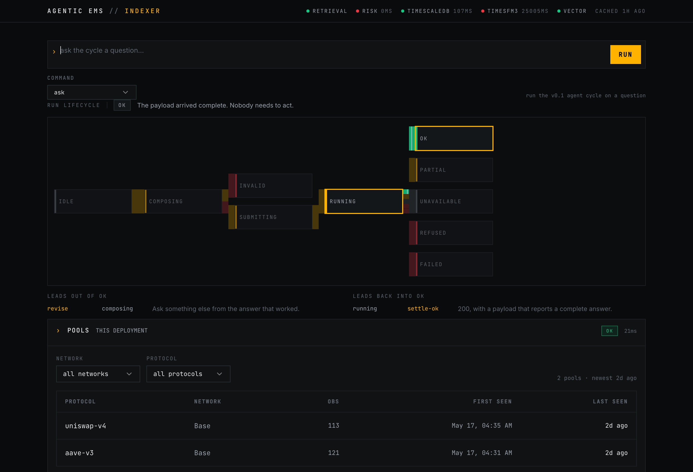

Constraint-bounded agents reallocate capital against quantile forecasts, and every decision traces to the projection that justified it.

The console, live. The pool universe is read from the deployment — an operator never types an address.
An intervention, expressed as a hyper-contextualized, intimate experience assembled on the fly, arriving precisely when needed, dissolved once its purpose is served. Fabric Ventures — The Emergence of the Machine Economy
Method and path both named. Reproducible at a pinned fork block, with the evidence committed.
| Claim | Where it is checked |
|---|---|
| 29 contract tests, no network | forge test |
| 21/21 registry addresses verified against live chain state — on Optimism and Polygon | pnpm run smoke |
| quote(amountOut) === swap(amountOut) | fork test, re-derived |
| The fill landed exactly on the band — 3,400 USDC for 1 WETH | both |
| 0xb3 is ours: the same program runs on our router and reverts UnknownOpcode(0xb3) on the canonical one | OpcodeOwnershipTest |
| The guard is inert when unarmed | a paired negative test |
Both directions are asserted on the opcode claim. A guard a taker could sidestep by pointing at a different router would be worth nothing; a silent misinterpretation of an upstream opcode would be worse than nothing.
Will the agents operating in this economy carry verifiable identity, transparent objectives, and genuine accountability? Or will it operate, as Kafka's court operated, from behind a door that recedes the faster you walk toward it? Fabric Ventures — The Emergence of the Machine Economy
The difference between a Dickensian and a Kafkaesque outcome is architectural. This is the architecture.
The desk and the console — the surface an operator actually watches. Live today.
Forecast, decision, risk, custody and settlement, as one pipeline rather than five scripts.
The web3-aligned ETF wrapper. This is the market, and it is the part not yet built.
| Crypto hedge fund AUM | $95.0B |
| Actively managed tokenized / RWA | $26.7B |
| Addressable capital | $121.7B |
| × 25 bps execution + management | — |
| TAM | $304M / yr |
Sources: CoinLaw 2026 · RWA.xyz Jun 2026.
| Crypto hedge funds | 400+ |
| Mean AUM | $237M |
| SAM at 25 bps | $237M / yr |
| SOM at 2% penetration | $4.75M / yr |
| SOM at 5% penetration | $11.85M / yr |
Source: Crypto Fund Research, Mar 2026. The split between funds that trade on-chain and those that hold is [share of funds that trade on-chain] — not sourced, so not guessed.
A $5–12M ARR business on the fund segment at 2–5% penetration. Real, and not a decacorn.
The ETF layer, where the capital base is orders of magnitude bigger. [tokenized fund market, sourced] — I could not source a credible projection and will not invent one.
$21.5T a year of stablecoin volume — of which 88% is exchange trading, bots and arbitrage. Flow we do not serve.
Vertical — reported afterwards ↑ structurally required · Horizontal — policy-driven → forecast-driven
The automated-and-accountable quadrant is not empty, and we are not picking different axes to pretend otherwise. What is empty is forecast-driven and structurally required — a narrower claim, and a true one.
TimesFM-3 issues a quantile band per pool in under a second. Two years ago this was a research paper.
An agent that can read a constraint set, propose a reallocation, and cite what it read.
Settlement with no intermediary, and a receipt for every action — the audit trail is native to the substrate.
Agent reputation, portable across counterparties. Mainnet, Jan 2026.
26M smart wallets. An agent with an account rather than a private key in a file.
$27.6T settled on-chain in 2024 — rivalling Visa and Mastercard combined.
Sources: Fabric Ventures, The Emergence of the Machine Economy (Mar 2026) · Chainlink × Ark Invest (May 2026).
| Gap | Why it is the next thing | Kind |
|---|---|---|
| Nothing is committed yet | 22 atomic commits planned, each green. Process, not engineering. | mechanical |
| Intent persistence | exec_intents carries the typed_data_hash binding a signature to the payload an operator reviewed. No repository writes or reads it, so :id is a caller-supplied handle. | next |
| Custody caps unenforced | perTxCapUsdc, dailyCapUsdc, allowlistOk exist as schema and nothing consults them. Enforcing needs the store above. | next |
| Position creation unencoded | The entry point is an actions batch whose command bytes could not be retrieved. Left rather than guessed — a wrong byte executes the neighbouring action. | deferred |
| The ETF wrapper | The instrument this is infrastructure for. The market, not yet the product. | roadmap |
A roadmap that names its own gaps is a stronger signal of relentless execution than a list of features.
Six years as a Web3 protocol engineer and smart-contracts auditor, and co-founder of Extra Labs, a geospatial 3D reconstruction platform. The execution half of this product is work he has shipped and audited before.
[specialist name] — a former fixed-income trader who went on to run DeFi at a major L2 chain, in discussion as an external specialist. He owns the half a protocol engineer cannot claim alone: how a desk sizes, hedges and defends a position when the band breaks.
[mentor name] — five to six years as a fixed-income trader at Bloomberg, building some of the terminal's most complex components, multi-asset risk synthesis among them. He advises on the risk layer the guardrails are built from.
Two halves, two résumés. Protocol engineering — 0xb3 provably ours, Safe-owned custody, an audit trail a schema enforces rather than a report somebody writes — is what the founder has shipped and audited for six years. Fixed-income trading — when to move, what the risk is, how a desk defends a position — is what the specialists bring, one from a desk and one from the machine those desks already trust for risk.
The spend is ordered: build the version that carries the record, then buy the room it is demonstrated in.
Inference and cloud for the platform's own research, and a minimal salary for a twelve-week base in SF or London.
The Web3 events worth being at, promoted through Aladdin DAO, with a tutorial series that shows the system working instead of describing it.
From what remains: governance proposals to prominent lending protocols and a prediction market. Once v1 is live, sales engineering with the trading firms that run Web3 desks.